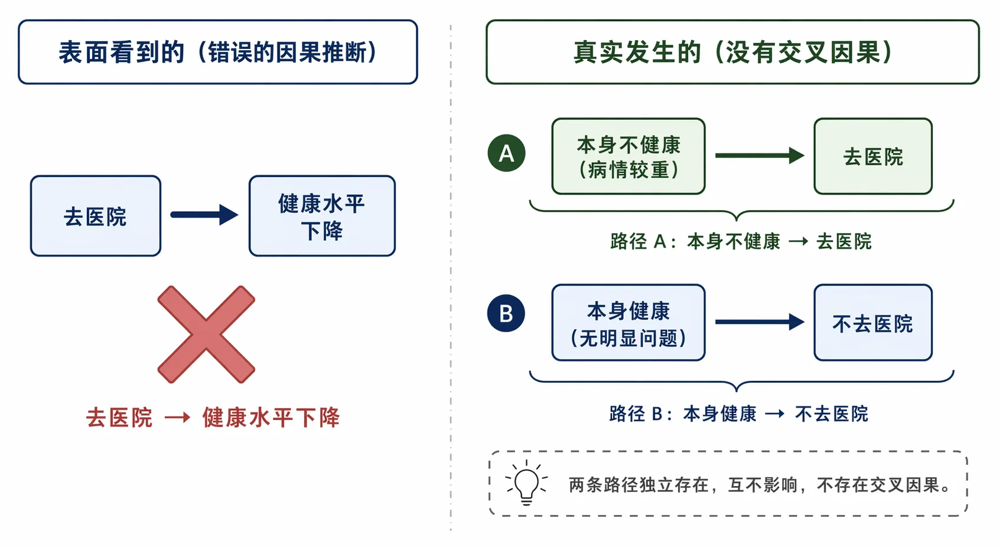

上海海关学院 · 2026 年暑期讲座
AI 时代下的经济统计
从因果推断到智能体工作流 —— 低年级本科生如何应对研究范式的第三次转移
第一部分
经济统计的出发点与目的地
1.1 区分“相关”与“因果”
1.1.1 经济统计与统计学的差别
经济统计和普通统计学的根本差别在哪里？一句话：经济统计的最终目标是因果推断。
普通统计学教你怎么描述数据——均值、方差、分布、相关性。这些东西当然有用，但经济学研究者最终要回答的问题几乎永远是“为什么”：
- 最低工资提高了，就业率会不会下降？
- 扩大进口，本土企业的创新能力会不会提升？
- 减税政策，能不能刺激企业投资？
这些问题不是在问“两件事有没有关联”，而是在问“一件事的变动是否导致了另一件事的变动”。
1.1.2 案例：医院门口的健康调查
假设我们在医院门口做一个调查：拦住 1000 个人，问了两个问题——
- 最近一个月去过医院吗？
- 给自己的健康水平打个分（1–10 分）。
数据跑出来，结果是这样的：
| 分组 | 人数 | 健康自评均值 | 标准差 |
|---|---|---|---|
| 去过医院 | 300 | 4.2 | 2.1 |
| 没去过医院 | 700 | 7.8 | 1.5 |
差异非常显著（p < 0.001）。一个简单粗暴的结论：去医院严重损害健康，平均降低约 3.6 分的健康评分。
这个结论对吗？当然不对。问题出在哪？
去过医院的人本来就不健康。他们不是因为去了医院才不健康，而是因为不健康才去医院。直接比较两组人的健康水平，就相当于拿病人和健康人比——两组人在“就医前”的健康状态根本不可比。
这就是样本选择偏误。我们拿到的数据中，处理组（去过医院的）和控制组（没去医院的）从一开始就没有可比性。

图1：样本选择偏误示意图
1.1.3 反事实分析框架
要判断“去医院是否导致健康水平下降”，我们需要回答一个永远无法在现实中观察到的反事实问题：
那些去过医院的人，如果他们没有去医院，健康水平会是多少？
如果我们能同时观察到一个人“去医院”和“没去医院”两种状态下的健康水平，比较这两个值的差异，就能干净地分离出“去医院”的因果效应。但现实中，我们只能看到一种状态——这就是因果推断的根本难题。
反事实框架告诉我们：任何因果推断策略，本质上都是在构造一个可信的反事实对照组。
1.1.4 相关性 ≠ 因果性：三个经典陷阱
除了选择偏误，还有几个常见的混淆场景：
混淆变量：冰淇淋销量和溺水死亡人数正相关。是因为冰淇淋导致溺水吗？不是，共同的原因是“气温”。夏天温度高，人们吃更多冰淇淋，也更多地游泳。
反向因果：警察数量和犯罪率正相关。是因为警察导致犯罪吗？更可能是因为犯罪率高的地方派了更多警察。
纯属巧合：有人统计了过去十年全国各省的星巴克门店数量与 985 高校数量，发现二者高度正相关（r > 0.85）。是星巴克培养出了 985 学生吗？还是 985 毕业生都去开星巴克了？都不是。经济发展水平高的省份，星巴克门店多，985 高校也多——两者碰巧走出了相似的地理分布，但彼此之间没有任何因果联系。数据的巧合，仅此而已。
- 有没有遗漏了共同原因？
- 方向会不会是反的？
- 这会不会只是偶然？
1.2 剑指“因果”的研究设计
既然直接比较不行，研究者又是怎么构造反事实对照组的？从理想世界到现实世界，有三种层次的方法。

图2：因果推断方法的三个层次
1.2.1 理想：平行宇宙
最理想的因果推断方法是什么？把同一个人复制两份，一份接受处理（比如去医院），一份不接受处理，然后比较两者的健康水平。
当然这不可能。但这个思想实验揭示了一个关键点：因果推断的黄金标准，是保证处理组和控制组在所有方面完全相同，除了是否接受处理这一点。
1.2.2 实验室实验：随机分配
退一步，虽然不能复制同一个人，但可以通过随机分配让两组人在统计意义上相同。
经济学中最经典的例子是田野实验。举个例子：我们要研究“获得小额贷款对家庭收入的影响”。在一批申请贷款的家庭中，随机抽取一半批准（处理组），一半不批准（控制组）。因为分配是随机的，这两组家庭在所有可观测和不可观测的特征上——教育、能力、动机、运气——都不存在系统性差异。
任何后续观察到的收入差异，就可以归因于贷款本身。
经济学实验当然比医学实验复杂得多。但逻辑是一致的：随机分配创造了可比的处理组和控制组。
1.2.3 现实：三种准实验策略
在真实研究中，我们很少有机会做随机实验。政策不是为研究者设计的，市场不会等人。于是，经济学家发展出了一整套准实验方法，目标都是在非随机数据中模拟随机实验的逻辑。
（1）工具变量法（IV）
核心思想：找一个只通过影响“是否接受处理”来影响结果的变量。
经典案例：Angrist & Krueger（1991）研究教育年限对收入的影响。他们使用了一个巧妙的工具变量——出生季度。逻辑很简单：美国的义务教育法规定，年满 16 岁才能退学，而入学的截止日期通常是 1 月 1 日。所以，出生在年初的人入学时年龄较大，更早达到 16 岁可以退学，因此受教育年限更少。
出生季度和教育年限相关（相关性条件满足），但出生季度和一个人的天赋或家庭背景几乎无关（外生性条件满足），出生季度除了通过影响教育年限，也不会有其他路径影响未来收入（排他性条件满足）。
实际上我们可以用更直观的例子来理解 IV：假设我们要研究“参加补习班对考试成绩的影响”。直接用补习班和考试成绩做回归会出问题——参加补习班的可能是成绩本来就不好的学生。但如果学校搞了一个随机实验：按身份证号码最后一位的奇偶性分配补习班名额。身份证号码尾数的奇偶显然和学生的天赋、家庭背景无关，但它决定了学生能否参加补习班。这就成了一个合格的 IV。
IV 需要满足三个条件：
- 相关性：工具变量必须和内生变量（处理变量）相关
- 外生性：工具变量和误差项不相关（不能直接影响结果）
- 排他性：工具变量只能通过影响处理变量来影响结果
配套检验方式：
- 外生性检验：工具变量是否和“本应不受处理影响的变量的结果”无关？比如，如果身份证尾数影响学生的性别比例或家庭收入均值，那就说明随机性有问题
- 排他性检验：在控制处理变量后，工具变量对结果的影响是否消失了？
- 弱工具变量检验：F 统计量是否大于 10？（如果工具变量和处理变量的相关性太弱，2SLS 估计量会有严重偏误）

图3：工具变量法示意
（2）双重差分法（DID）
核心思想：比较处理组和控制组在政策前后的变化差异。
经典设定：某个政策在某时点在一些地区实施，在另一些地区没有实施。我们手里有政策前后、各地区的数据。
DID 的关键假设是平行趋势：如果没有政策，处理组和控制组的结果变量会按照相同的趋势变化。我们无法直接验证这个假设（因为反事实不可观测），但可以检验政策之前的趋势是否平行。
举个政策评估的例子：2013 年中国在部分城市试点碳排放权交易。我们想评估碳交易对企业创新的影响：
- 处理组：试点城市的企业
- 控制组：非试点城市的企业
- 处理时间：2013 年政策实施
DID 模型：$$Y_{it} = \beta_0 + \beta_1 \cdot \text{Treat}_i + \beta_2 \cdot \text{Post}_t + \beta_3 \cdot (\text{Treat}_i \times \text{Post}_t) + \varepsilon_{it}$$
我们真正关心的是 $\beta_3$——交互项的系数。它捕捉了处理组在政策实施后“多出来的变化”，也就是政策的因果效应。
配套检验方式：
- 平行趋势检验：画一张图，x 轴是年份，y 轴是结果变量，两条线分别代表处理组和控制组。在政策实施年份之前，两条线应当大致平行
- 安慰剂检验：假设政策在真正实施之前就发生了，如果在虚拟的政策时间点检测不到效应，说明前面检测到的效应确实是政策带来的
- 动态效应分析：不要在政策后只放一个 Post 变量，而是放政策后各年的虚拟变量，看效应如何随时间演变
（3）断点回归法（RDD）
核心思想：当处理状态在某一个临界值处发生跳跃时，临界值附近的人本质上是“局部随机”的。
经典例子：美国国会议员选举。得票率在 50% 附近时，稍微多一点选票就当选，稍微少一点就落选。比较得票率 49.9% 和 50.1% 的候选人——这两个群体差异极小，唯一的显著区别是 50.1% 的人当选了。那么，比较这两组人所在选区的后续政策或经济发展，就能识别“执政”的因果效应。
另一个更贴近日常生活的例子：学校录取分数线。中考 598 分和 601 分的学生，能力几乎没有差别，但前者没被重点高中录取，后者被录取了。比较他们三年后的高考成绩，就能估计重点高中的因果效应。
RDD 的两个子类型：
- 精确断点（Sharp RDD）：临界值处，处理概率从 0 跳到 1
- 模糊断点（Fuzzy RDD）：临界值处，处理概率跳跃但不完全从 0 到 1（比如，超过分数线的人不一定都去重点高中，有些会选择其他学校）
配套检验方式：
- 内生性检验：前定变量（如性别、年龄、家庭背景）在断点处不应有跳跃
- 带宽敏感性：改变带宽后的系数是否稳定
- 断点操纵检验：人们是否能够操纵落入断点哪一侧？（McCrary 检验——断点处的密度分布不应有跳跃）
1.2.4 三种方法速览
| 方法 | 核心逻辑 | 典型场景 | 关键检验 |
|---|---|---|---|
| IV | 用外生变量替代内生处理 | 内生变量无法直接估计 | 弱工具变量、外生性、排他性 |
| DID | 比较时间 × 处理的差异 | 政策先后在不同地区推行 | 平行趋势、安慰剂 |
| RDD | 利用临界值附近的随机性 | 有明确资格线的制度 | 操纵检验、带宽敏感性 |
这三种方法看似不同，但本质上在做同一件事：在非实验数据中构造一个有可比性的反事实对照组。
1.3 为什么我们需要统计学：系数估计
1.3.1 从总体到样本
前面的讨论都在方法论层面：怎么设计研究才能干净地识别因果关系。但即便设计做到了最好，我们还面临一个现实问题：我们手里只有样本。
我们永远观察不到“总体”。全国有多少家企业？所有中国家庭的总收入是多少？企业供应链网络的“真实”中心性是多少？我们拥有的只是一部分样本数据，而我们想推断的是总体特征。
这带来了两个问题：
- 用样本算出的估计值，和真实的总体参数之间差了多少？
- 要多少样本，估计值才能足够接近真实参数？
1.3.2 大数定律
大数定律是统计学中最优美也最实用的定理之一。它的核心含义非常简单：
当样本量趋于无穷大时，样本均值趋近于总体均值。
用更通俗的话说：样本越大，估计越准。
打个比方：扔一次硬币，正面朝上的比例要么是 0 要么是 1——离 0.5 差得远。扔 10 次，大约 60% 的可能是 4–6 次正面。扔 100 次，几乎可以肯定正面比例在 0.4–0.6 之间。扔 10000 次，比例几乎就是 0.5。

图4：大数定律示意——随着样本量增加，样本均值收敛于总体均值
大数定律给出的“一致性”保证是：样本量够大，你一定很准。但它没有告诉你收敛的速度——而这恰好是决定研究可行性的关键。
1.3.3 从双重差分到系数估计
回到我们前面的 DID 例子。模型是：
$$Y_{it} = \beta_0 + \beta_1 \cdot \text{Treat}_i + \beta_2 \cdot \text{Post}_t + \beta_3 \cdot (\text{Treat}_i \times \text{Post}_t) + \varepsilon_{it}$$
我们最关心的参数是 $\beta_3$，也就是交互项的系数。但如何从数据中得到 $\hat{\beta}_3$（带上帽子的希腊字母 beta，表示样本估计值）？最小二乘法（OLS）给出了一个公式。我们先来看一个更简单的情形，帮助建立直觉。
1.3.4 简单线性回归中的系数估计
考虑最简单的线性回归：
$$y_i = \beta_0 + \beta_1 \cdot x_i + \varepsilon_i$$
假设我们有 5 个人的数据，研究“教育年限（x）对月收入（y，千元）的影响”：
| i | 教育年限 x_i | 月收入 y_i（千元） |
|---|---|---|
| 1 | 12 | 5 |
| 2 | 14 | 7 |
| 3 | 16 | 10 |
| 4 | 18 | 12 |
| 5 | 20 | 16 |
OLS 的目标是找一条直线，使得所有点到这条线的垂直距离的平方和最小。也就是说，我们要最小化：
$$S(\beta_0, \beta_1) = \sum_{i=1}^{n} (y_i - \beta_0 - \beta_1 \cdot x_i)^2$$
对 $\beta_0$ 和 $\beta_1$ 分别求偏导并令其为零，经过推导，得到 $\beta_1$ 的估计量：
$$\hat{\beta}_1 = \frac{\sum_{i=1}^{n} (x_i - \bar{x})(y_i - \bar{y})}{\sum_{i=1}^{n} (x_i - \bar{x})^2}$$
现在，把上面 5 个人的数据带入：
- x̄ = (12 + 14 + 16 + 18 + 20) / 5 = 16
- ȳ = (5 + 7 + 10 + 12 + 16) / 5 = 10
分子——x 和 y 的协方差和：
- i=1：(12−16)(5−10) = (−4)(−5) = 20
- i=2：(14−16)(7−10) = (−2)(−3) = 6
- i=3：(16−16)(10−10) = (0)(0) = 0
- i=4：(18−16)(12−10) = (2)(2) = 4
- i=5：(20−16)(16−10) = (4)(6) = 24
- 分子 = 20 + 6 + 0 + 4 + 24 = 54
分母——x 的方差和：
- i=1：(12−16)² = 16
- i=2：(14−16)² = 4
- i=3：(16−16)² = 0
- i=4：(18−16)² = 4
- i=5：(20−16)² = 16
- 分母 = 16 + 4 + 0 + 4 + 16 = 40
所以：
$$\hat{\beta}_1 = 54 / 40 = 1.35$$
再用 $\hat{\beta}_0$ = ȳ − $\hat{\beta}_1$·x̄ = 10 − 1.35 × 16 = −11.6，我们得到：
$$\hat{y}_i = -11.6 + 1.35 \cdot x_i$$
含义：每多受一年教育，月收入平均增加约 1350 元。
这个公式本身并不复杂，但研究 $\hat{\beta}_1$ 的统计性质才是统计学的精华所在。
1.3.5 $\hat{\beta}_1$ 的统计性质
（1）无偏性
在经典线性回归假设下（线性、严格外生性、无完全多重共线性、球形误差项），OLS 估计量 $\hat{\beta}_1$ 是 $\beta_1$ 的无偏估计。也就是说：
$$E[\hat{\beta}_1] = \beta_1$$
为什么？我们把 $y_i = \beta_0 + \beta_1 \cdot x_i + \varepsilon_i$ 代入 $\hat{\beta}_1$ 的公式：
$$\hat{\beta}_1 = \frac{\sum (x_i - \bar{x})(y_i - \bar{y})}{\sum (x_i - \bar{x})^2} = \frac{\sum (x_i - \bar{x})(\beta_0 + \beta_1 \cdot x_i + \varepsilon_i - \bar{y})}{\sum (x_i - \bar{x})^2}$$
经过整理，可以发现分子中 $\sum (x_i - \bar{x}) \cdot \bar{y} = \bar{y} \cdot \sum (x_i - \bar{x}) = 0$，$\sum (x_i - \bar{x}) \cdot \beta_0 = \beta_0 \cdot \sum (x_i - \bar{x}) = 0$。因此：
$$\begin{aligned} \hat{\beta}_1 &= \frac{\sum (x_i - \bar{x})(\beta_1 \cdot x_i + \varepsilon_i)}{\sum (x_i - \bar{x})^2} \\ &= \beta_1 \cdot \frac{\sum (x_i - \bar{x}) \cdot x_i}{\sum (x_i - \bar{x})^2} + \frac{\sum (x_i - \bar{x}) \cdot \varepsilon_i}{\sum (x_i - \bar{x})^2} \\ &= \beta_1 + \frac{\sum (x_i - \bar{x}) \cdot \varepsilon_i}{\sum (x_i - \bar{x})^2} \end{aligned}$$
两边取期望：
$$E[\hat{\beta}_1] = \beta_1 + \frac{\sum (x_i - \bar{x}) \cdot E(\varepsilon_i)}{\sum (x_i - \bar{x})^2}$$
在外生性假设下，$E(\varepsilon_i | x_i) = 0$，所以 $E(\varepsilon_i) = 0$。因此：
$$E[\hat{\beta}_1] = \beta_1$$
含义：如果你把同一个研究重复做 10000 遍，每次用不同的随机样本，10000 个 $\hat{\beta}_1$ 的平均值会等于真实的 $\beta_1$。
（2）方差
$\hat{\beta}_1$ 的方差衡量了“这个估计量在不同样本之间有多大的波动”。从 $\hat{\beta}_1 = \beta_1 + \frac{\sum (x_i - \bar{x}) \cdot \varepsilon_i}{\sum (x_i - \bar{x})^2}$ 出发：
$$\text{Var}(\hat{\beta}_1) = \text{Var}\left(\beta_1 + \frac{\sum (x_i - \bar{x}) \cdot \varepsilon_i}{\sum (x_i - \bar{x})^2}\right)$$
$\beta_1$ 是常数，方差为 0。在球形误差项假设下（同方差、无自相关），各 $\varepsilon_i$ 独立且方差均为 $\sigma^2$：
$$\begin{aligned} \text{Var}(\hat{\beta}_1) &= \frac{\text{Var}\left(\sum (x_i - \bar{x}) \cdot \varepsilon_i\right)}{\left[\sum (x_i - \bar{x})^2\right]^2} \\ &= \frac{\sum (x_i - \bar{x})^2 \cdot \text{Var}(\varepsilon_i)}{\left[\sum (x_i - \bar{x})^2\right]^2} \\ &= \frac{\sigma^2 \cdot \sum (x_i - \bar{x})^2}{\left[\sum (x_i - \bar{x})^2\right]^2} \\ &= \frac{\sigma^2}{\sum (x_i - \bar{x})^2} \end{aligned}$$
这个公式反映了两个关键信息：
- 误差项方差 $\sigma^2$ 越大，$\hat{\beta}_1$ 的估计精度越低（数据噪声大，信号不清晰）
- x 的总变异 $\sum (x_i - \bar{x})^2$ 越大，$\hat{\beta}_1$ 的估计精度越高（x 的变化范围越广，越容易识别它对 y 的影响）
回到我们的例子：分母 $\sum (x_i - \bar{x})^2 = 40$。如果数据噪声 $\sigma^2 = 4$，那么 $\text{Var}(\hat{\beta}_1) = 4/40 = 0.1$，$\text{SE}(\hat{\beta}_1) = \sqrt{0.1} \approx 0.316$。这意味着 $\hat{\beta}_1 = 1.35$ 的标准误大约是 $0.316$——估计的 $1.35$ 大致在 $1.034$ 到 $1.666$ 之间波动。
（3）一致性
当样本量趋于无穷大时，$\hat{\beta}_1$ 依概率收敛于 $\beta_1$。这意味着你不需要无限重复研究——只要你手里的样本足够大，你的估计就能足够准。
从 $\text{Var}(\hat{\beta}_1) = \frac{\sigma^2}{\sum (x_i - \bar{x})^2}$ 可以看出：随着样本量 $n$ 增大，分母 $\sum (x_i - \bar{x})^2$ 持续增长，$\text{Var}(\hat{\beta}_1)$ 持续缩小，趋向于零。这正是大数定律在回归框架中的体现。
这三个性质合在一起回答了“为什么要学统计学”这个核心问题：统计学给了我们一套语言和工具，让我们能够描述估计量的可靠性，而不只是给出一个数字了事。

图5：OLS 估计量的统计性质
1.4 为什么我们需要统计学：假设检验
1.4.1 假设检验的基本逻辑
即便我们算出了 $\hat{\beta}_1$，还有一个问题没有解决：这个估计值是否显著不等于零？
注意“显著”这个词的含义。如果 $\hat{\beta}_1$ = 0.001，它不等于零，但可能只是由于随机抽样误差造成的。假设检验帮助我们回答：观察到的效应，有多大可能只是噪音？
假设检验的逻辑类似于法庭审判：
- 零假设 $H_0$：“被告无罪”（$\beta_1 = 0$，没有效应）
- 备择假设 $H_1$：“被告有罪”（$\beta_1 \neq 0$，有效应）
- 我们的策略：先假设 $H_0$ 成立，然后看数据是否与这个假设严重矛盾
1.4.2 t 检验与 p 值
双侧 t 检验的步骤：
- 计算 t 统计量：$t = \hat{\beta}_1 / \text{SE}(\hat{\beta}_1)$
- SE($\hat{\beta}_1$) 是 $\hat{\beta}_1$ 的标准误，反映了估计量的抽样变异程度
- t 统计量 = 信号 / 噪音 = “估计值相对于其标准误大了多少倍”
- 根据自由度（n − k，即样本量减去参数个数）查阅 t 分布表，确定 p 值
- p 值 = 在 $H_0$ 成立的前提下，观察到当前估计值（或更极端值）的概率
- 常用判断标准：
- p < 0.01 → 在 1% 水平上显著（***）
- p < 0.05 → 在 5% 水平上显著（**）
- p < 0.10 → 在 10% 水平上显著（*）
通俗理解：如果 $\hat{\beta}_1$ = 2.5，SE = 1.0，那么 t = 2.5。这个值意味着估计的效应是标准误的 2.5 倍——信号比噪音大得多。t 分布的 5% 临界值大约是 1.96，2.5 > 1.96，所以我们有理由拒绝“没有效应”的零假设。
反过来，如果 $\hat{\beta}_1$ = 0.3，SE = 1.0，t = 0.3。0.3 远小于 1.96，p 值很大，我们无法拒绝零假设。不是说“肯定没有效应”，而是说“现有数据没有提供足够强的证据证明有效应”。
1.4.3 互动练习：揪出伪造的显著性
假设我们拿到一篇论文的回归结果，四个关键变量的系数和显著性标注如下：
| 变量 | 系数 $\hat{\beta}$ | 标准误 SE | 标注 |
|---|---|---|---|
| 教育年限 | 0.085 | 0.091 | ** |
| 工作经验 | 0.042 | 0.015 | *** |
| 性别（女=1） | -0.156 | 0.082 | * |
| 城市（一线=1） | 0.231 | 0.052 | *** |
论文作者声称：教育年限的回报率在 5% 水平上显著为正，工作经验在 1% 水平上显著为正，性别和城市效应也各自显著。
📋 你的任务
不要信任作者的标注。请逐行计算 t 统计量，自己动手验证每一个星号是否合理。（已知临界值：1% = 2.58，5% = 1.96，10% = 1.65）
—— 给学生 3 分钟计算时间 ——
现在让我们逐行核对：
| 变量 | 系数 $\hat{\beta}$ | 标准误 SE | t 统计量 | |t| vs 临界值 | 论文标注 | 验证 |
|---|---|---|---|---|---|---|
| 教育年限 | 0.085 | 0.091 | 0.934 | 0.934 < 1.65 | ** | ✗ 伪造 — 连10%都不显著 |
| 工作经验 | 0.042 | 0.015 | 2.800 | 2.800 > 2.58 | *** | ✓ 正确 — 1%水平显著 |
| 性别（女=1） | −0.156 | 0.082 | 1.902 | 1.65 < 1.902 < 1.96 | * | ✓ 正确 — 10%水平显著 |
| 城市（一线=1） | 0.231 | 0.052 | 4.442 | 4.442 > 2.58 | *** | ✓ 正确 — 1%水平显著 |
结论：四个系数中，只有教育年限的显著性标注是伪造的——t 值不到 1，连 10% 的显著性门槛都够不着，却被标了两颗星。
这个练习的目的不是让学生学会查表（反正以后都靠软件），而是让学生理解：显著性标注背后有一个清晰的数学逻辑链条，不应该被盲目接受。看到别人论文里的星星，不妨自己动手算一遍。
1.4.4 统计显著性 ≠ 经济显著性
这是最容易被混淆的概念。
| 统计显著性 | 经济显著性 | |
|---|---|---|
| 回答什么问题 | 效应是否存在？ | 效应是否重要？ |
| 决定因素 | t 统计量（系数 / 标准误） | 系数本身的大小 |
| 例子 1 | 教育年限每增加 1 年，收入增加 0.0001%，但 t = 10 | 存在效应，但规模微乎其微 |
| 例子 2 | 教育年限每增加 1 年，收入增加 50%，但 t = 0.5 | 效应巨大，但数据不足以确认 |
大样本下，几乎一切系数都“统计显著”——因为标准误随着样本增大而趋近于零。这时候，真正需要关注的是系数本身的大小，而不是星标的数量。
当样本量超过 100 万时，如果有人指着三个星号跟你强调“这个效应是显著的”，你可以礼貌地提醒他：在这个样本量下，连你晚上睡不好觉对第二天生产力的影响都是显著的。

图6：统计显著性与经济显著性的区别
第二部分
我们应该如何学习经济统计
2.1 田园史诗时代（2018 年—2020 年）
2.1.1 什么样的一代研究者
把时间拨回到 2019 年。彼时，ChatGPT 还没出现，Copilot 还在娘胎里。经济学专业的学生是这样学计量的：
- 打开伍德里奇的《计量经济学导论》，从概率论到 OLS 到面板数据，一页一页啃
- 用 Stata 跑回归，手动敲
reg y x, robust，代码报错就去经管之家论坛翻帖子 - 追连享会的推文，学习 ivreg2、reghdfe、bacondecomp 的各种用法
- 安装 R 包需要先搞清楚
install.packages和devtools::install_github的区别 - 画图先要记住
ggplot2的语法，哪个图层对应哪个geom_
知识的获取是线性的：你把基础学扎实，然后往上垒。搜索引擎是你的外脑，但搜索的结果好坏，取决于你用的关键词对不对——而不幸的是，很多时候你甚至不知道“你该不知道什么”。
2.1.2 知识的价值与工具的壁垒
在这个时代，知识本身就是最重要的资产。
两个研究者之间的差距，很大程度上取决于：
- 谁知道更多的识别策略
- 谁掌握更熟练的编程技能
- 谁更了解哪个论坛里藏着有经验的师兄师姐
这是一种有壁垒的知识经济。壁垒高，意味着进入成本大；但壁垒一旦被突破，护城河也很宽。
学习规划的核心：掌握知识 + 掌握工具。学习路线是固定的：先学计量理论，再学 Stata/R，然后做实证练习。这条路没有捷径。
2.2 LLM 时代（2020 年—2025 年）
2.2.1 游戏规则的改变
2022 年 11 月 30 日，ChatGPT 发布。这之后的两年，对经济学研究者的冲击不亚于一场地震。
LLM 改变了什么？
- 信息获取方式的根本性变革。以前你想知道“R 语言中如何计算企业网络的度中心性”，你需要：搜索 → 读文档 → 筛选 → 理解 → 尝试。现在：打字 → 回车 → 代码在眼前。
- 知识本身的可替代性上升。以前记住
igraph::degree()和igraph::betweenness()是一种稀缺能力。现在，连snap、networkx这些你根本没听说过的包，LLM 都能给你调用。 - 信息差的缩小。不同研究者之间在“知道什么”上的差距在快速收窄。
但 LLM 时代有个核心局限：LLM 只能提供信息，不能上手干活。它像一个全知全能但被困在屏幕里的同事——能告诉你答案，但不能替你操作电脑。
2.2.2 新的学习规划
Prompt Engineering 成了新的必修课。但请注意，好的 Prompt 并不是写一段漂亮的文字，而是：
- 清晰地定义任务的边界和目标
- 提供足够的上下文和约束条件
- 分步骤引导 LLM 进行推理
例如，同样是问“帮我分析数据”，差的 Prompt 和好的 Prompt 差异巨大：
差 “帮我分析一下这个数据”
好 “我有一个 CSV 文件，代表中国上市公司 2010-2022 年的面板数据。核心变量包括：firm（企业代码）、year（年份）、revenue（营收）、profit（利润）。请帮我：1）筛选出连续存在至少 5 年的企业样本；2）对 profit/revenue 的缺失值用 winsorize 1% 处理；3）输出按年份的描述性统计表，包括均值、中位数、标准差”
2.2.3 时代的定位
LLM 时代，会提问的人和不会提问的人之间的差距在拉大。但知识多少的价值在下降，工具熟练度的价值也在下降。
我把 LLM 时代称为最后的田园牧歌。为什么是“最后”？因为在这个时代，AI 工具再强大，也需要你自己动手——复制代码、调参数、排错、格式化输出。AI 是你的军师，但仗还是得你自己打。
当然，使唤学生是另一回事，但那不在我们的讨论范围内。
2.3 Agentic AI 时代（2025 年—）
2.3.1 什么是 Agentic AI
先说一个简单的公式：
Agentic AI = Harness + LLM
把 LLM 想象成一台发动机——动力强劲，但如果没有方向盘、刹车和导航系统，再好的发动机也只能原地轰鸣。Harness 就是这套控制系统。
Harness 包括哪些东西？
- SKILL：定义智能体在特定任务场景下的行为规范和工作流程。比如，“当用户要求清洗数据时，你必须先预览数据、规划步骤、征得用户同意后才能生成代码”
- Agents：定义子智能体的角色和职责。每个子智能体只负责一件特定的事
- Tools：智能体可以调用的外部工具——Python 脚本、API、文件系统操作
- 约束规则：智能体必须遵循的行为边界——比如，不允许修改原始数据、不允许跳过用户确认环节
在这个公式下，LLM 是引擎，Harness 是方向盘。两者结合，AI 从“只能告诉你答案”变成了“能在你的环境中帮你干活”。

图7：Agentic AI = Harness + LLM
2.3.2 时代冲击
Agentic AI 时代，研究流程正在被彻底重构。
你不再需要手动搜索文献——智能体帮你搜。你不再需要逐篇读 PDF 做笔记——智能体帮你生成知识卡片。你不再需要从零写代码——智能体帮你规划步骤、生成代码、审查代码、运行输出。
对老一代研究者（包括我在内）来说，这种变化让人焦虑——甚至是恐惧。我们花了无数时间积累的技能壁垒，在 AI 面前轰然倒塌。
但换个角度：工具壁垒的消解，正是新一代研究者的机会。
2.3.3 新的学习规划
在 Agentic AI 时代，学习重心从“知识记忆”和“工具操作”转向设计与管理：
- 智能体基本知识
- 理解 SKILL 和 Agent 的概念
- 知道什么时候该写 SKILL，什么时候该定义新的 Agent
- 理解智能体之间的通信方式（文件传递、消息路由）
- 项目管理思维
- 数据的长期管理与版本控制
- 代码的模块化组织、复用与维护
- 项目文件夹的标准化结构
- 智能体设计模式
- HITL（Human-In-The-Loop）：在关键节点嵌入人类判断
- Reflection（反思）：让智能体审查自己的输出并自我改进
- Chain-of-Thought（思维链）：引导智能体分步推理
- Role-Playing（角色扮演）：让不同子智能体扮演不同角色协同工作
- Harness Engineering：规范智能体行为
- 如何编写有效的约束规则
- 如何设计输出模板和风格指南
- 如何将研究者的品味和判断力编码进 Harness
- 检验输出结果
- 永远不要假设智能体的输出是正确的
- 交叉验证、边界测试、常识检验
- 你对结果负责，不是你使用的智能体负责
2.3.4 人与 AI 关系的重构
当 AI 可以胜任“执行者”的角色，人类的角色自然转向设计者和决策者。
打个比方：十年前，能熟练操作 Stata 的研究者就像能烧一手好菜的厨师。现在，AI 扮演了自动炒菜机的角色——切菜、调味、翻炒它全能干。那厨师的价值在哪？在于设计菜单——决定今天做什么菜、用哪种食材、配什么样的味道。
每个人都在成为“产品经理”——不是你亲手写代码、跑回归、画图表，而是：
- 定义问题（我要研究什么？）
- 设计流程（这个研究应该怎么推进？）
- 设定标准（什么样的输出算好？什么样的算不合格？）
- 做出判断（这个结果可信吗？背后有别的解释吗？）
2.3.5 三阶段对比
| 维度 | 田园史诗 | LLM 时代 | Agentic AI 时代 |
|---|---|---|---|
| 知识价值 | 最高 | 下降 | 持续下降 |
| 工具壁垒 | 高 | 中 | 低 |
| 信息差 | 大 | 缩小 | 进一步缩小 |
| 核心竞争力 | 知识 + 技能 | 提问能力 | 设计 + 判断能力 |
| 人类角色 | 执行者 | 提问者 + 执行者 | 设计者 + 决策者 |
| AI 角色 | — | 信息提供者 | 任务执行者 |
| 代表工具 | Stata, R | ChatGPT, Claude | OpenCode, Cursor, Copilot |

图8：三个时代的对比
第三部分
Show me the code：智能体实战展示
3.1 文献管理智能体
“笨蛋会找到办法，聪明人会找到笨蛋在哪。” —— Jony J《信仰》
3.1.1 它能做什么
文献管理智能体是一个完整的实证研究辅助工具。它把一个研究者的文献工作拆成五个环节，每个环节由一个专门的子智能体负责：
| # | 环节 | 子智能体 | 输入 | 输出 |
|---|---|---|---|---|
| 1 | 搜索文献 | lit-search | 关键词 + 期刊 + 年份 | CSV 格式搜索结果 |
| 2 | 整理文献 | lit-organize | PDF 论文 | Markdown 知识卡片 |
| 3 | 分析文献 | lit-analyze | 搜索结果 + 知识卡片 | HTML 分析报告 |
| 4 | 推荐选题 | lit-topic | 分析报告 | Markdown 选题报告 |
| 5 | 评价选题 | lit-evaluate | 选题 | Markdown 可行性评估 |
五个环节串成一条完整的链：关键词 → 搜索 → 整理 → 分析 → 选题 → 评价

图9：文献管理智能体工作流
3.1.2 子智能体详解
lit-search：文献搜索
使用 CrossRef REST API，不依赖爬虫，不依赖机构订阅。输入关键词后，自动拉取指定期刊、指定年份的所有相关文章。返回结果自带关联度评分（score），自动映射为 1-5 星标。
输出一份 CSV 文档 + 一条 Top 20 文献列表 + Top 5 摘要推送。
lit-organize：文献整理
读取 PDF，逐篇提取 8 个关键要素：研究问题、关键结论、理论框架、数据来源、识别策略、核心发现、机制检验、局限性。输出为 YAML Frontmatter + Markdown 格式的知识卡片，同时在已有知识卡片间建立双向引用关系。
lit-analyze：文献分析
整合搜索结果与知识卡片，从六个维度分析领域趋势：历年发表量与期刊结构、各年度最热主题、高产作者及其研究演进、矛盾观点与学术争议、研究空白、潜力方向推荐。输出为 HTML 格式的交互式报告。
lit-topic：推荐选题
基于分析报告中的矛盾观点和研究空白，用两种策略生成选题：策略 A——针对矛盾观点，提出可能调和双方的新理论；策略 B——针对研究空白，按“理论 A + 方法 B + 情境 C”的组合生成新选题。最终输出 3 个选题。
lit-evaluate：选题评价
从四个维度打分（每项满分 10 分）：新颖性、数据可行性、方法可行性、发表可能性。综合判断：建议推进 / 修改后推进 / 不建议。
3.1.3 人类的智慧
很多人看完这套流程后会困惑：文献搜索是 AI 做的、PDF 提炼是 AI 做的、趋势分析是 AI 做的、选题推荐也是 AI 做的——那我做什么？
答案是：你是那个做选择的人。
文献管理智能体提供的只是地图——一张归纳了领域演进趋势、文献关联结构的地图。AI 的优势在于：不怕麻烦、没有偏好、不会忘记。所以它能用极低的成本和极快的速度，帮你梳理一个大领域的文献脉络。
但：
- 看一千遍西安地图，尝不到一口擀面皮
- 读一百份分析报告，不如精读五篇关键论文
使用 AI 智能体，而不是被 AI 智能体使用。工具提供信息，判断依赖人类。这个判断力——读什么论文、信什么结论、做什么选题——恰恰是需要十年二十年阅读和思考才能练出来的东西，也是这个时代最不容易被替代的东西。
3.2 数据清洗智能体
“Talk is cheap. Show me the code.” —— Linus Torvalds
3.2.1 场景设定
周六晚上 23:30，导师发来语音：
“小张，明天给我做份数据。算一下中国上市公司网络的度中心性和中介中心性，把财务指标都并进去。我感觉这次肯定能发《经济研究》，一定要快。收到请回复。”
你的手指不受控制地打下：“收到，谢谢老师。”——但你心里清楚，你连度中心性是什么都不知道。这是数据清洗智能体诞生的场景原型。
3.2.2 核心处理逻辑
整个智能体的工作流程是一个 Human-In-The-Loop（HITL） 的 7 步循环：
- 用户输入：以自然语言描述数据处理任务
- 智能体规划：调用 SKILL，理解任务、规划步骤、向用户展示方案
- 用户确认：用户审核方案，可以修改任何步骤
- 生成代码：智能体生成 R 语言代码初稿
- 代码审查：唤醒 code-reviewer 子智能体，审查代码质量
- 修正代码：智能体根据审查意见修正 Error 和 Warning
- 运行输出：执行修正后的代码，生成数据结果

图10：数据清洗智能体的 HITL 工作流
3.2.3 SKILL 设计要点
8 步工作流：
确认关键信息 → 预览原始数据 → 规划处理方案 → 创建任务结构 → 编写清洗脚本 → 编写 master 文档 → 脚本代码审查 → 代码修改与结果输出
场景自适应：新建任务时严格执行全部 8 步；追加处理时自动感知既有文件结构，仅执行必要步骤。
资产文件（assets）：三个文件决定了代码的输出质量——code_style.md（R 语言代码风格规范）、code_clean_template.R（单表清洗模板）、code_master_template.R（合并主代码模板）。
将清洗（clean）和整合（master）分离，是数据处理项目管理的关键设计。好处在于：如果要修改某个变量的清洗逻辑，只需要改对应的 clean 脚本，不需要动 master 脚本。如果新增一个变量，只需要新增一个 clean 脚本，再在 master 中加一行读取命令即可。
3.2.4 code-reviewer：代码的自我纠错
code-reviewer 是一个独立的子智能体，角色设定为：一个掌握 R 语言、精通数据处理、熟悉 tidyverse 语法、且以严格著称的代码审查者。
它从五个维度审查代码：文件路径是否正确、是否严格执行了用户的数据处理意图、代码能否正确运行、是否遵循 code_style.md 的规范、是否遵循模板约定的格式。
反馈分三级：Error（影响代码正确性，必须修正）、Warning（影响代码质量，建议修正）、Correct（代码正确，无需修改）。
这是 Reflection 模式的具体实现：智能体先写出代码，再由专门的子智能体去审查，确保代码质量。在实际测试中，引入 code-reviewer 后，代码的错误率下降约 60%。
3.2.5 实用案例：计算企业网络中心性
以 3.2.1 中小张面临的任务为例，用户只需用自然语言描述需求，智能体便完成：确认项目信息 → 预览数据 → 展示处理计划 → 生成并审查代码 → 输出结果。整个过程的 Token 成本约为 1.0–1.75 元人民币。
实际测试中，智能体生成的代码质量相当高——它在 master.R 中构造了一个匿名函数，使用 igraph 包的分组迭代语法（map_dfr）逐年计算网络指标，代码结构清晰，注释完整。即使是熟练的 R 用户，要手写出同等质量的代码也需要 20–30 分钟。
3.2.6 时代反思
2019 年的时候，我花了半年时间钻研 R 语言。此后，靠着帮各色各样的人处理各色各样的数据赚生活费。对于精通 R 这件事，我总有一种从不说出口的骄傲：这个世界上真正懂得数据处理艺术的人那么少，而我就是其中一个。但当智能体在 1 分钟内生成出不比我 30 分钟手写差的代码时，我的骄傲被狠狠扇了一巴掌。
AI 智能体在数据处理上有四个我们很难超越的优势：
- 没有情绪——不会因为调不通 Bug 而烦躁
- 无限耐心——真的能给你每一步代码加注释
- 庞大知识库——能发现和调用你听都没听过的包和函数
- 成本低廉——整套流程跑下来的费用，还没有早上哄自己上班的那杯瑞幸贵
最重要的：几乎不需要前期投入。只要你掌握自然语言，用合适的工具就能越过学习曲线。
但这不意味着我们应当放弃学习，而是意味着学习的重心需要转移——从“学语言”转向“学设计”：
- 完善风格文档，提升智能体的代码品味
- 完善输出模板，提高代码准确性与可读性
- 完善项目管理逻辑，增强项目的可维护性与可拓展性
- 针对特定需求开发专用智能体
与其被时代的车轮碾在脸上，不如卯着劲跳上车去，看看这股风能吹多远。
第四部分
学习资料推荐
4.1 系统入门
《经济金融智能体设计》
作者：李学恒、林建浩、严翊歆、张一帆（中山大学岭南学院）
内容覆盖：OpenCode 环境配置、SKILL 与 Agent 基础语法、21 种智能体设计模式、实证经济学研究流程改造
适合：希望系统掌握 Agentic AI 在经济学研究中应用的学生和研究者
4.2 实战跟进
公众号：张同学的 AI 进阶之路
内容：文献管理智能体、数据清洗智能体、选题评估智能体等实战案例的详细拆解
适合：已有基础概念，希望了解具体应用场景和实现细节的读者
4.3 配套资源

图11：配套资源